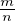

Tõenäosusteooria on matemaatika haru, mis uurib juhuslikke sündmusi ja nende
seaduspärasusi. Tõenäosus kirjeldab sündmuste toimumise võimalikkust.
Tõenäosuse kirjeldamiseks seatakse sündmusega vastavusse arv nullist üheni, mis
iseloomustab sündmuse toimumise võimalikkust. Tõenäosus on null, kui sündmus ei
toimu ja tõenäosus on üks, kui sündmus toimub. Seega jäävad tõenäosuse võimalikud
väärtused 0 ja 1 vahele.
Kindlaks sündmuseks nimetatakse sündmust, mis kindlasti toimub ja
võimatuks sündmuseks nimetatakse sündmust, mis kindlasti ei toimu.
Statistiliseks tõenäosuseks nimetatakse sündmuse suhtelist sagedust, kui katsete
arv on küllaltki suur. See tähendab, et tõenäosus leitakse suure hulga katsete põhjal.
Klassikaliseks tõenäosuseks nimetatakse sündmuse jaoks soodsate võimaluste
arvu m ja kõigi võimaluste arvu n jagatist .